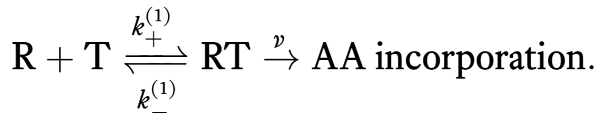
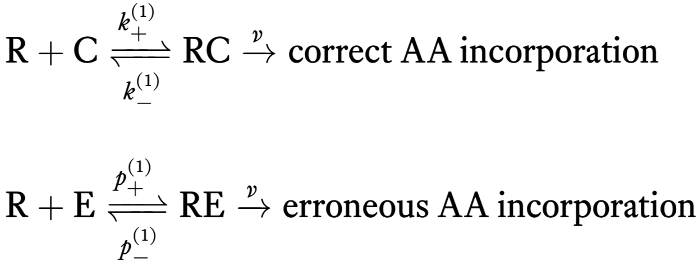
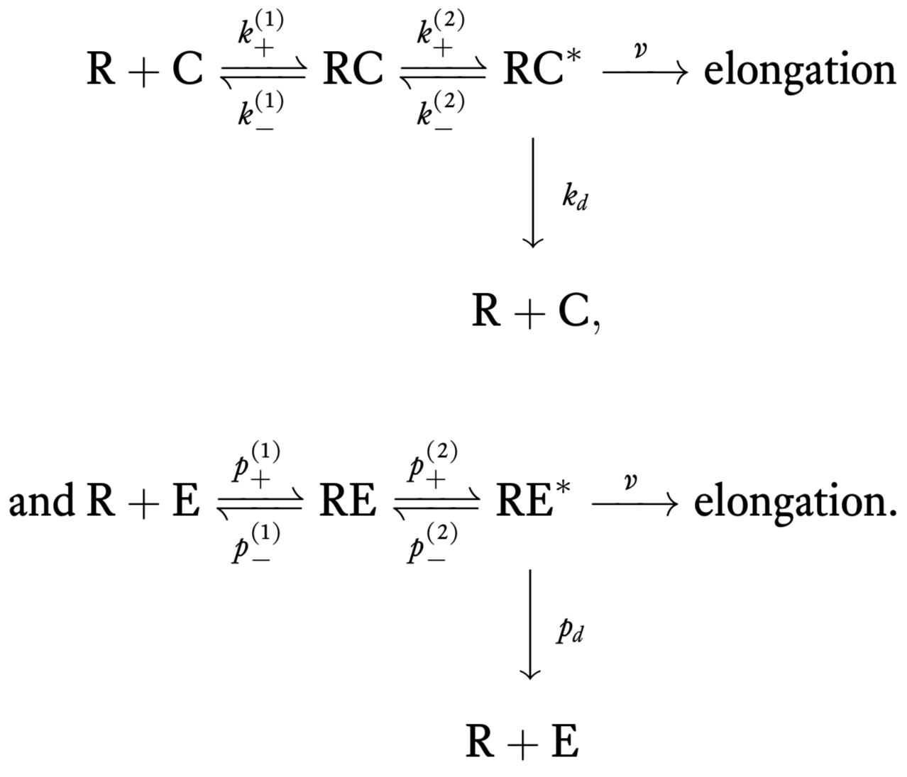

9 Kinetic proofreading: Multi-step processes reduce error rates in molecular recognition
Design principle
- Driven multistep pathways enable amplification of selectivity.
Technique
- Application of statistical thermodynamics to estimate error rates.
9.1 Introduction
In the past several chapters, we have encountered the concept of robustness through several examples. Through our study of dosage compensation, we saw how expression level of a gene can be robust to variations in the copy number of that gene via an incoherent feed-forward loop. Through our examination of chemotaxis, we saw how circuit architecture can endow a bacterial cell with exact adaptation robustly with respect to enzyme levels over many orders of magnitude. Finally, in our study of signal amplification, we saw how bifunctionality of enzymes can achieve perfect linear amplification completely independently of (and therefore robust to) variations in the total level of signaling molecules.
In this final chapter on robustness, we will discuss the process of kinetic proofreading, the process by which cells achieve the remarkable fidelity of their core transcriptional and translational processes. Here we will focus on translation, though there are interesting proofreading mechanisms at play in transcription as well. The robustness statement is: The fidelity of translation is robust to inherent thermal fluctuations. This is a different flavor of robustness; kinetic proofreading is a mechanism by which the function of a biochemical process, in this case translation, achieves a higher fidelity that what is naively expected by equilibrium processes.
The error rate in translation of mRNA to protein by ribosomes is about \(10^{-4}\) errors per amino acid. We will work out whether or not this error rate is high or low compared to equilibrium expections, and then discuss mechanisms about how it is achieved. The design principle we will explore is more general: Driven multistep pathways enable amplification of selectivity. By the word “driven,” we mean that energy consuming reactions are necessary for the multiple steps.
9.2 A simple model for incorporation of amino acids
We can think of the process of translation as consisting of two successive steps. First, a tRNA (T) reversibly associates with the ribosome/mRNA complex (R). When associated, an amino acid can be irreversibly added to the nascent peptide. This is represented by the following reaction scheme.

The notation where we have superscripted (1) is chosen with an eye toward multiple steps toward amino acid incorporation we will consider later.
Unfortunately, there can also be incorporation of erroneous tRNAs leading to erroneous amino acid incorporation. So, we should really write two sets of chemical reactions, one for correct incorporation of an amino acid and one for erroneous.

Here, we have denoted chemical rate constants for erroneous incorporation with a \(p\). Note that we have assumed that the irreversible incorporation rate is the same for correct and incorrect incorporation.
9.2.1 Amino acid incorporation rate
Using mass action kinetics, we can write the dynamical equations for amino acid incorporation. Importantly, we have
\[ \begin{align} &\text{rate of incorporation of correct AAs} \equiv r_c = v\, c,\\[1em] &\text{rate of incorporation of erroneous AAs}\equiv r_e = v\, e, \end{align} \tag{9.1}\]
where \(c\) is the concentration of RC and \(e\) is the concentration of RE.
We assume a separation of time scales, where incorporation of the amino acid is much slower than the other dynamics. This means that the first reaction,
\[ \begin{align} \require{mhchem} \ce{R + C <=>[k_+^{(1)}][k_-^{(1)}] RC}, \end{align} \tag{9.2}\]
comes to rapid equilibrium, such that
\[ \begin{align} &k_+^{(1)}\,c_\mathrm{R}\,c_\mathrm{C} \approx k_-^{(1)}\,c, \\[1em] &p_+^{(1)}\,c_\mathrm{R}\,c_\mathrm{E} \approx p_-^{(1)}\,e, \end{align} \tag{9.3}\]
where \(c_\mathrm{R}\) is the concentration of ribosomes, \(c_\mathrm{C}\) is the concentration of correct tRNA and \(c_\mathrm{E}\) is the concentration of erroneous tRNA. The quantities \(c_\mathrm{R}\), \(c_\mathrm{C}\), and \(c_\mathrm{E}\) are assumed to be constant, since they are in great excess and the cell is constantly producing them. We can solve these equations for the pseudo-equilibrium concentrations of RC and RE,
\[ \begin{align} c &\approx \frac{k_+^{(1)}}{k_-^{(1)}}\,c_\mathrm{R}\,c_\mathrm{C}\\[1em] e &\approx \frac{p_+^{(1)}}{p_-^{(1)}}\,c_\mathrm{R}\,c_\mathrm{E}. \end{align} \tag{9.4}\]
Thus, the rate of incorporation of correct and incorrect of amino acids is respectively
\[ \begin{align} &r_c = \frac{v\,k_+^{(1)}}{k_-^{(1)}}\,c_\mathrm{R}\,c_\mathrm{C},\\[1em] &r_e = \frac{v\,p_+^{(1)}}{p_-^{(1)}}\,c_\mathrm{R}\,c_\mathrm{E}. \end{align} \tag{9.5}\]
9.2.2 Error rates
We are interested in computing the error rate, \(f_0\), which is the number of erroneous amino acids incorporated per correct amino acid. We will compute this at steady state, so the steady state error rate is
\[ \begin{align} f_0 = \frac{\text{rate of incorporation of erroneous AAs}}{\text{rate of incorporation of correct AAs}} = \frac{r_e}{r_c}. \end{align} \tag{9.6}\]
The error rate is \[ \begin{align} f_0 = \frac{e}{c} = \frac{p_+^{(1)}}{p_-^{(1)}}\,\frac{k_-^{(1)}}{k_+^{(1)}}\,\frac{c_\mathrm{E}}{c_\mathrm{C}}. \end{align} \tag{9.7}\]
Note that the two ratios of rate constants are the dissociation constants for the interaction of the tRNA with the ribosome/mRNA complex; \(K_\mathrm{d,c} = k_-^{(1)}/k_+^{(1)}\) and \(K_\mathrm{d,e} = p_-^{(1)}/p_+^{(1)}\). Finally, to ease notation, we define the ratio of concentrations of erroneous and correct tRNAs to be \(q\). Thus, we have
\[ \begin{align} f_0 = q\,\frac{K_\mathrm{d,c}}{K_\mathrm{d,e}}. \end{align} \tag{9.8}\]
From thermodynamic considerations, the dissociation constant is given by
\[ \begin{align} K_\mathrm{d} = \exp\left[-\frac{E_\mathrm{R} + E_\mathrm{T} - E_\mathrm{RT}}{k_\mathrm{B}T}\right], \end{align} \tag{9.9}\]
where the subscript T is either E or C. Since \(E_\mathrm{C} \approx E_\mathrm{E}\), the ratio of the dissociation constants is
\[ \begin{align} \frac{K_\mathrm{d,c}}{K_\mathrm{d,e}} = \exp\left[-\frac{E_{\mathrm{RE}} - E_{\mathrm{RC}}}{k_\mathrm{B}T}\right]. \end{align} \tag{9.10}\]
So, the error rate for this simple model is
\[ \begin{align} f_0 = q\,\exp\left[-\frac{E_{\mathrm{RE}} - E_{\mathrm{RC}}}{k_\mathrm{B}T}\right]. \end{align} \tag{9.11}\]
9.2.3 Does this work?
As mentioned before, about \(10^{-4}\) erroneous amino acids per residue are incorporated. We will take \(q \approx 20\), though this can vary significantly depending on the amino acid, since tRNA abundance is variable. Plugging in numbers, to get an error rate of \(10^{-4}\), we need
\[ \begin{align} \frac{E_{\mathrm{RE}} - E_{\mathrm{RC}}}{k_\mathrm{B}T} \approx -\ln\left( 5\times 10^{-6}\right) \approx 12. \end{align} \tag{9.12}\]
The difference in the interaction between an erroneous and correct tRNA and the ribosome/mRNA complex would have to be at least \(12k_\mathrm{B}T\) (maybe more because some tRNAs are in higher abundance). We now have to ask: What is the energy difference between correctly and incorrectly bound tRNA-mRNA pairs and how does this compare to \(12k_\mathrm{B}T\)?
Being off by a single base pair could result in an erroneous amino acid being incorporated. The misalignment of the base pairs would result in disrupted hydrogen bonds. Base pairs have two or three hydrogen bonds. Presumably, at least one could form if the bases are misaligned. Thus, we could get an error with a single hydrogen bond being off. The stacking interactions are not as important here, since the bases are confined within the geometry of the ribosome. So, we will estimate that the energy difference is about one hydrogen bond, or \(2k_\mathrm{B}T\). There is just not enough energy in hydrogen bonding to give the necessary energy difference to give the low error rate.
9.3 Kinetic proofreading
Experimentally, it is known that there are intermediate steps in translation. In 1974, John Hopfield’s big insight was that these steps require energy (e.g., GTP hydrolysis involving the elongation factor EF-Tu), and can therefore serve to decrease the error rate since the energy serves to overcome the limit set by thermodynamics ((Hopfield 1974)). These hydrolysis events can cause a conformational change in the tRNA-codon complex that allow elongation and also for dissociation of tRNA from the codon. For this scheme, the chemical reactions are

9.3.1 Error rate by kinetic proofreading
We will now compute the error rate for this new scheme. To begin, we compute the steady rate of elongation with correct amino acids, which we will call \(r_c\). Again assuming a separation of time scales, our goal is to compute the steady state concentration of RC\(^*\), \(c^*\), since \(r_c = v c^*\). Some differential equations describing the dynamics of the system under mass action kinetics are
\[ \begin{align} &\frac{\mathrm{d}c_\mathrm{R}}{\mathrm{d}t} = -k_+^{(1)} c_\mathrm{R}\,c_\mathrm{C} + k_-^{(1)} c + k_dc^* \label{eq:ss_1}\\[1em] &\frac{\mathrm{d}c}{\mathrm{d}t} = k_+^{(1)} c_\mathrm{R}\,c_\mathrm{C} - k_-^{(1)} c - k_+^{(2)}c + k_-^{(2)}c^*. \end{align} \tag{9.13}\]
Setting the time derivatives to zero, the first equation gives
\[ \begin{align} c = \frac{1}{k_-^{(1)}}\,\left(k_+^{(1)}c_\mathrm{R}\,c_\mathrm{C} - k_dc^*\right). \end{align} \tag{9.14}\]
Substituting this expression into the second equation (with the time derivative set to zero) yields
\[ \begin{align} k_d c^* - \frac{k_+^{(2)}}{k_-^{(1)}}\,\left(k_+^{(1)}c_\mathrm{R}\,c_\mathrm{E} - k_dc^*\right) + k_-^{(2)}\,c^* = 0 \end{align} \tag{9.15}\]
This is readily solved for \(c^*\) to give
\[ \begin{align} c^* = \frac{k_+^{(1)} k_+^{(2)} c_\mathrm{R}c_\mathrm{C}}{k_+^{(2)}k_d + k_-^{(1)}\left(k_-^{(2)} + k_d\right)}. \end{align} \tag{9.16}\]
Similarly, we have for \(e^*\),
\[ \begin{align} e^* = \frac{p_+^{(1)} p_+^{(2)} c_\mathrm{R}c_\mathrm{E}}{p_+^{(2)}p_d + p_-^{(1)}\left(p_-^{(2)} + p_d\right)}, \end{align} \tag{9.17}\]
giving an error rate of
\[ \begin{align} f = \frac{r_e}{r_c} = \frac{e^*}{c^*} = q\left(\frac{p_+^{(1)} p_+^{(2)}}{k_+^{(1)} k_+^{(2)}}\right) \left(\frac{k_+^{(2)}k_d + k_-^{(1)}\left(k_-^{(2)} + k_d\right)}{p_+^{(2)}p_d + p_-^{(1)}\left(p_-^{(2)} + p_d\right)}\right). \end{align} \tag{9.18}\]
9.3.2 Approximate error rate
For ease of comparison and to build intuition, we will consider the following approximations.
- The dissociation of the activated complexes is much faster than their deactivation. This is essentially a statement of the irreversibility of the GTP hydrolysis reaction. Mathematically, this means \(k_-^{(2)} \ll k_d\) and \(p_-^{(2)} \ll p_d\).
- The equilibrium prior to hydrolysis is fast; hydrolysis and conformational change are slow. Hence, \(k_+^{(2)} \ll k_-^{(1)}\), and \(p_+^{(2)} \ll p_-^{(1)}\).
- The hydrolysis reaction is nonspecific, such that \(k_+^{(2)} \approx p_+^{(2)}\).
Applying approximation (1), we have
\[ \begin{align} k_+^{(2)}k_d + k_-^{(1)}\left(k_-^{(2)} + k_d\right) \approx \left(k_-^{(1)} + k_+^{(2)}\right)k_d. \end{align} \tag{9.19}\]
Applying approximation (2) gives
\[ \begin{align} \left(k_-^{(1)} + k_+^{(2)}\right)k_d \approx k_-^{(1)} k_d. \end{align} \tag{9.20}\]
Similar results hold for the terms describing erroneous binding. Thus, we have
\[ \begin{align} f \approx q\,\frac{p_+^{(1)}\,p_+^{(2)}}{k_+^{(1)}\,k_+^{(2)}}\,\frac{k_-^{(1)}k_d}{p_-^{(1)}p_d}. \end{align} \tag{9.21}\]
Since \(K_{\mathrm{d},e} = p_-^{(1)} / p_+^{(1)} \approx p_-^{(1)} / k_+^{(1)}\), we have
\[ \begin{align} f \approx q\,\frac{p_+^{(2)}}{k_+^{(2)}}\,\frac{K_{\mathrm{d,e}}}{K_\mathrm{d,c}}\,\frac{k_d}{p_d}. \end{align} \tag{9.22}\]
We use approximation (3), that the hydrolysis reaction is nonspecific such that \(k_+^{(2)} \approx p_+^{(2)}\), giving
\[ \begin{align} f \approx q\,\frac{K_{\mathrm{d,e}}}{K_\mathrm{d,c}}\,\frac{k_d}{p_d} = \frac{k_d}{p_d}\,f_0, \end{align} \tag{9.23}\]
which is a \(k_d/p_d\)-fold improvement over the error rate without proofreading. So, to get improved fidelity, we need \(k_d < p_d\); incorrectly paired complexes dissociate faster than correctly paired ones. To bring the error rate down four more orders of magnitude to the observed error rate, we would need this ratio to be about 1/10000.
9.3.3 Multiple steps enable greater selectivity
We have shown that adding the extra activation step allows for greater selectivity of correct amino acid incorporation in the context of translation. This extra step is a “proofreading” step that requires energy, hence the name kinetic proofreading. The kinetic proofreading principle is, in fact, more general. We have studied a recognition problem where there are two steps: bind a substrate and trigger a response. In this case, the substrate is tRNA and the response is addition of a new amino acid.
This principle can be extended to arbitrarily many steps, with greater fidelity achieved as more and more steps are added. Of course, each step costs energy. If you want to beat thermodynamics, you have to pay for it with energy!
9.4 Kinetic proofreading in the immune system
Kinetic proofreading has been applied extensively to model the exquisite fidelity of T cell antigen receptors in the recognition of major histocompatibility complexes (MHCs). In this system, agonist MHCs bind T cell receptors that then trigger an immune response. It is important to not trigger a response when endogenous MHCs are presented to the T cell to avoid an autoimmune response.
This system exhibits extraordinary sensitivity, with the ability to detect a single ligand in a sea of thousands. The error rate in this recognition process is below \(10^{-6}\). This is accomplished by a kinetic proofreading mechanism that uses a simple idea. Imagine an MHC candidate binds a T cell receptor. Before the immune response can proceed, a sequence of phosphorylations of the receptor must occur. The phosophorylations can only occur when the receptor is bound. While waiting for these phosphorylation events endogenous MHCs, which have a faster rate of dissociation from the receptor, may fall off, while the agonist MHCs have a better chance of hanging on before the signal to the immune response can be transmitted. You can work out the details of this mechanism in an end-of-chapter problem.
9.5 Conclusion
We now conclude our section focusing on robustness. We hope that we have conveyed how this complex property of robustness can be viewed from many angles and can appear at many different levels of a biological system’s architecture to serve many different purposes. The ubiquity of robustness means that it will often prove beneficial to think about any new system you encounter from a robustness-oriented point of view in order to gain new insights and understanding about its structure and behavior. As such, we hope that as we move into studying other types of biological systems in the chapters to come, you will continue to think in the back of your mind about how various components and properties of these systems might be robust or fine-tuned, and to what purpose they have evolved to be this way.